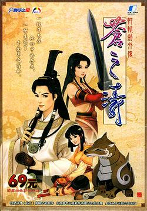

轩辕剑外传 苍之涛 軒轅劍外傳 蒼之濤
当时剧情玩了一半吧，在一个巨大日晷的地图里剧情闪退 _(:з)∠)_ 重新读档很多次都无法通过剧情，只能删游戏了（大约是小学4年级），有机会还是需要重新玩一下，当时超喜欢车芸妹妹，相比现在的取向也是受那是影响
说过什么
2018-07-28 17:31:17
广播 · 想玩
当时剧情玩了一半吧，在一个巨大日晷的地图里剧情闪退 _(:з)∠)_ 重新读档很多次都无法通过剧情，只能删游戏了（大约是小学4年级），有机会还是需要重新玩一下，当时超喜欢车芸妹妹，相比现在的取向也是受那是影响
最后一次看到是 2026-08-01T11:03:42+10:00 · 豆瓣原页